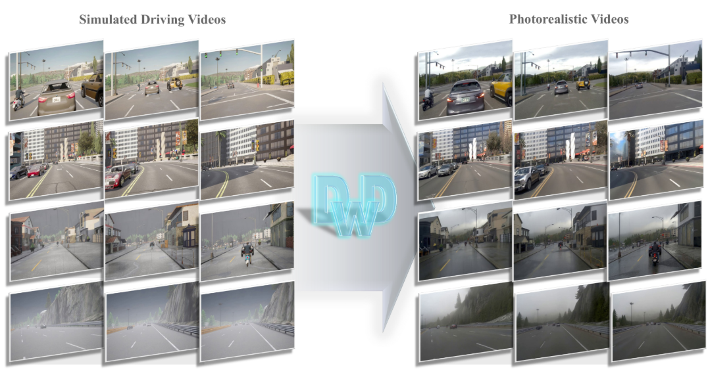
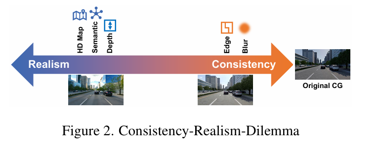
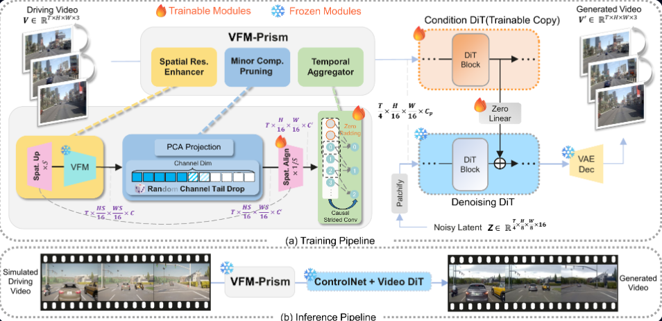
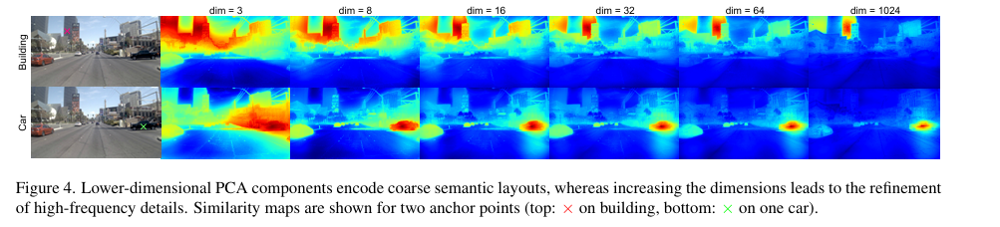
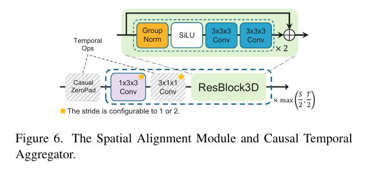

Driving with DINO：用视觉表征破解 Sim2Real 的一致性—真实性困境
论文主页：DwD Project Page
自动驾驶的闭环验证（closed-loop evaluation）一直是一个令人头疼的问题：在真实道路上测试代价高昂，危险案例（corner cases）又极难复现；而仿真器虽然提供了近乎无限的可扩展性，却因视觉保真度不足而与现实世界存在显著的域差距（domain gap）。如何弥合这道鸿沟，一直是自动驾驶数据工程的核心命题之一。
这篇博客介绍我们的工作 DwD（Driving with DINO），一个基于视觉基础模型（Vision Foundation Model, VFM）特征的可控视频扩散框架，旨在把仿真渲染视频转换为照片级真实视频，同时保持与仿真输入的几何一致性。论文已发布在 arXiv:2602.06159。

问题背景：仿真器的视觉鸿沟
像 CARLA 这样的开源驾驶仿真器，在渲染成本和场景多样性之间做出了取舍——渲染出的画面往往呈现出"游戏感"（CG-like）的视觉特征，与真实摄像头采集的图像在纹理、光照、噪声分布上存在系统性偏差。一个在仿真数据上训练好的感知模型，在真实场景下的表现往往大幅下滑，这就是所谓的 Sim2Real 迁移问题。
近年来，以 ControlNet 为代表的可控视频扩散模型提供了一条新的解法思路：用仿真画面作为结构控制信号，驱动扩散模型生成真实感图像，同时保留仿真场景的几何布局。问题的关键在于——选什么作为中间表征（intermediate representation）？
核心矛盾：一致性—真实性困境
现有方法对中间表示的选择大致分为两个方向，而这两个方向恰好站在一个根本性矛盾的两端，我们将其称为 Consistency-Realism Dilemma（一致性—真实性困境）：

- 低层信号（边缘图、模糊图）：提供精确的结构约束，但代价是把仿真的 CG 纹理"烘焙"进生成结果——扩散模型被迫沿着 CG 的边缘和色块生成，真实感大打折扣。
- 高层信号（深度图、语义图、HD Map）：放弃了精细结构，允许扩散模型自由合成纹理，因而真实感更强——但结构信息的缺失会导致幻觉（hallucination），例如凭空生成不存在的车道线，或错误地改变道路布局。
有没有"既要又要"的办法？多控制分支方案尝试把低层和高层信号同时输入，但这带来了巨大的显存开销，以及不同模态之间的梯度冲突，实践中很难收敛。
我们的思路：DINO 特征作为统一桥梁

我们注意到一个有趣的特性：以 DINOv3 为代表的视觉基础模型，其特征空间天然地编码了从低层（精细纹理）到高层（语义布局）的连续谱系信息。这种多尺度的表示能力，正是 DINO 在分类、检测、分割等多粒度任务上表现出色的根本原因。
核心假设：DINO 特征可以作为一个统一的中间桥梁，同时携带足够的结构信息（对应低层控制信号的优势）和语义抽象（对应高层控制信号的优势），从而在单个控制分支内自然地调和一致性与真实性的矛盾。
然而，直接将 DINO 特征注入 ControlNet 行不通——实验表明这会导致 纹理泄漏（texture leakage）：DINO 特征足够强大到可以近乎完整地重建输入图像，使得扩散模型本质上在"记忆并复制"仿真纹理，而非生成真实感图像。此外，DINOv3 的空间下采样率高达 16
DwD
为了解决上述问题，我们提出 DwD 框架，其核心是 VFM-Prism 模块，由三个相互配合的组件构成。
1. 空间分辨率增强（Spatial Resolution Enhancer）
DINOv3 相比旧版 DINO 有一个关键优势：得益于 RoPE-box jittering 位置编码，它对高分辨率输入具有良好的鲁棒性。我们利用这一特性，在送入 DINO 编码器之前，先将输入视频上采样
这一做法在输入空间（而非特征空间）进行上采样，实验表明优于 Featup、Anyup 等后验特征上采样方案，能更好地保留对象边界的结构细节。随之引入的尺寸不匹配，由 Spatial Alignment Module（步长卷积 + 残差块）来弥合，将特征图压缩回 DiT 所需的

2. 次要成分剪枝（Minor Components Pruning）
这是处理纹理泄漏的核心机制。我们采用 PCA 将高维 DINO 特征投影到
然而，硬性截断有一个隐患：结构信息与外观信息的边界在特征空间中并不清晰，过激的维度削减（如
为此，我们提出 随机通道尾部剪枝（Random Channel Tail Drop）：训练时不使用固定的截断阈值，而是从预定义集合
在推理阶段，
3. 因果时序聚合器（Causal Temporal Aggregator）

DINOv3 对每帧独立编码，导致时序维度上存在大量冗余，且与 DiT 块的输入需求在时间维度上不匹配。朴素的关键帧采样或双线性插值会破坏运动连续性，引发时序混叠（temporal aliasing）和运动模糊。
我们在 Spatial Alignment Module 中插入 因果卷积块，以因果方式对时序维度进行降采样。因果卷积的核心优势在于：每一帧的输出仅依赖于当前帧及历史帧，而不受未来帧的影响。这种历史上下文的显式保留，能有效抑制帧间抖动，提升生成视频的时序稳定性。
实验结果


数据集：在 nuPlan 数据集上训练，在 CARLA 仿真渲染的视频上进行评估。
评估维度：
- 视觉保真度：sFID / sKID（特征分布距离，采用语义感知采样策略构建 40 万对对齐样本）
- 感知真实感：CLIP-Real（正/负提示词嵌入比值，量化与真实摄影的对齐程度）
- 时序一致性：Motion-S（运动合理性）和 WarpSSIM（光流 warping 后的帧间结构相似性）
- Sim2Real 一致性：mIoU（用预训练语义分割模型对比生成帧与仿真 GT 的语义一致性）
实验结论：
- 在 sFID/sKID 上，DwD 大幅领先所有 baseline，包括低层控制（边缘、模糊）和高层控制（深度、语义、HD Map）方法
- CLIP-Real 与深度/语义等高层方法持平，远优于低层方法（后者实质上在复制 CG 纹理，CLIP-Real 与 CG 基准相差无几）
- 时序一致性全面优于基于高层信号的方法，略逊于边缘方法（后者高度保留 CG 结构故 WarpSSIM 偏高，但代价是完全丧失真实感）
- mIoU 与低层控制信号相当，验证了几何一致性未因真实感提升而牺牲

消融分析关键发现： -
- 空间上采样倍数
- 因果时序聚合器同时改善了 WarpSSIM 和 sFID/sKID，主因是显著减少了模糊帧和失真帧的比例
关于"一致性—真实性困境"的再思考
回顾整个工作，DwD 的本质是把"选哪种控制信号"这一离散的工程决策，转化为 DINO 特征空间内一个连续的权衡旋钮（通过
这种思路或许对其他模态迁移问题也有一定启发：当两种需求存在内在张力时，与其设计两个相互竞争的专用模块，不如寻找一个天然编码了两者的统一表示，再通过轻量级的后处理来调节平衡点。
总结
DwD 以 DINOv3 特征作为仿真与现实之间的统一语义桥梁，通过 VFM-Prism 的三个组件（空间分辨率增强、次要成分剪枝与随机通道尾部剪枝、因果时序聚合器）系统性地解决了纹理泄漏、空间压缩和时序冗余三个核心挑战。实验结果验证了这一设计在视觉保真度、感知真实感、时序稳定性和 Sim2Real 一致性上的全面优势。
后续工作将探索在更大规模、更高分辨率的驾驶数据集上的扩展能力，以及 DwD 在闭环自动驾驶系统中的实际部署潜力。